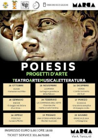

Siamo fieri di presentarvi il cartellone artistico 2018/2019 della quarta edizione di POIESIS -Progetti d'Arte-, incontri su Teatro, Arte, Musica,
Letteratura a cura del Teatro di Calabria e con il patrocinio della Fondazione Rocco Guglielmo e della Provincia di Catanzaro. Abbiamo scelto di percorrere un filo narrativo inedito, che idealmente collegherà gli incontri della stagione invernale del TdC alle opere protagoniste dell'edizione 2019 di #GRAECALIS. Il rapporto tra "Nomos" e "Physis", tra Diritto degli uomini e Legge di Natura, tra Sentimento e Ragione sarà al centro di ogni nostro appuntamento, in un percorso di crescente formazione che accompagnerà lo spettatore fino alla rassegna estiva. Il nostro percorso partirà dagli albori del Mito, con la figura enigmatica,
controversa e affascinante di Ulisse o Odisseo, "Colui che odia/colui che è odiato" e le interpretazioni che, nel corso dei secoli, sono state date a questo personaggio di immortale fama. Grande spazio alla letteratura moderna e contemporanea con i "giganti" Leopardi, Verga e Sciascia Immancabile l'appuntamento con la Commedia per le annuali celebrazioni della giornata mondiale della Commedia dell'Arte. Ancora, un meraviglioso viaggio nella poesia in musica: a Maggio con il fuori programma "Una storia americana", il racconto del Nuovo Continente attraverso le canzoni dei cantautori italiani. Infine, il viaggio verso le nostre radici più antiche, quelle che affondano nella "Magna Grecia" e nella civiltà classica: dopo l'appuntamento con Ulisse, sarà la volta di Enea e del suo "eroico dolore"; poi un'inedito e affascinante parallelismo tra Foscolo e le leggi degli antichi sulla "Sacra Morte". Per chiudere, l'atteso appuntamento con l'Anteprima di #GRAECALIS2019. Il viaggio verso la Bellezza è iniziato: salite a bordo!
Si ringraziano gli autori dell'articolo e la redazione di TEATRODICALABRIA FACEBOOK
Teatro di Calabria - Poiesis cartellone 2018/2019
articolo pubblicitario cartellone artistico del "Teatro di Calabria Aroldo Tieri" pubblicato nell'anno 2018
Aldo Conforto Letteratura a cura del Teatro di Calabria e con il patrocinio
Aldo Conforto cartellone artistico 2018/2019 della quarta edizione di POIESIS
Aldo Conforto Fondazione Rocco Guglielmo
controversa e affascinante di Ulisse o Odisseo

Riccardo Conforto
https://aldoconforto.github.io/teatro/riccardo-conforto-design-e-gestione-del-sito
{kind=link}